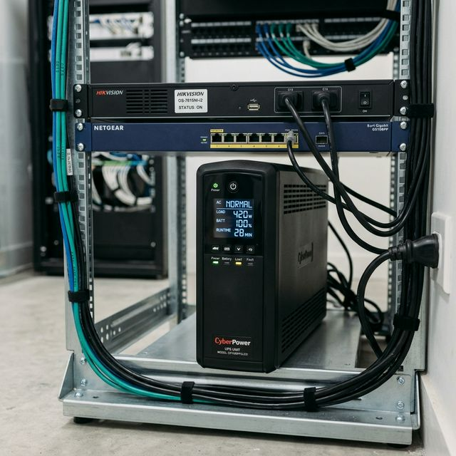
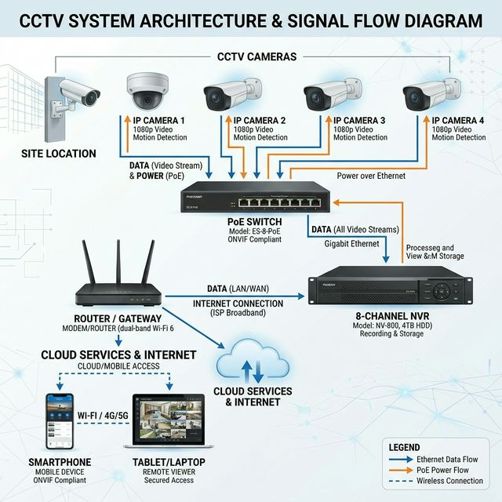
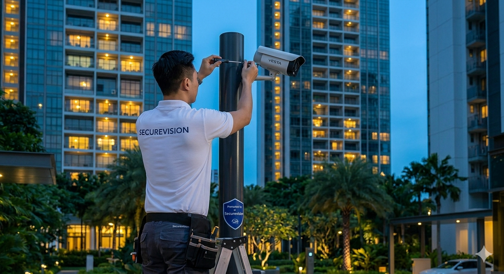
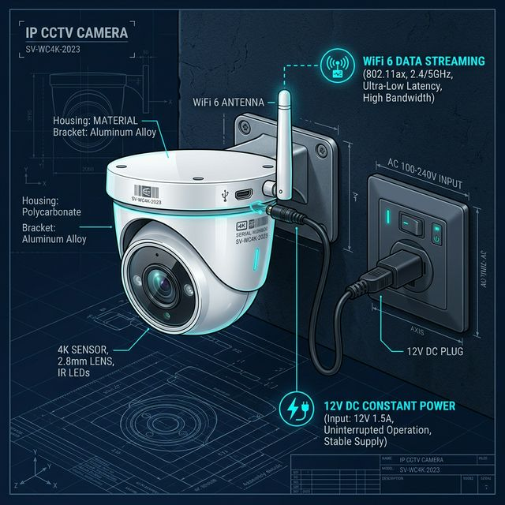
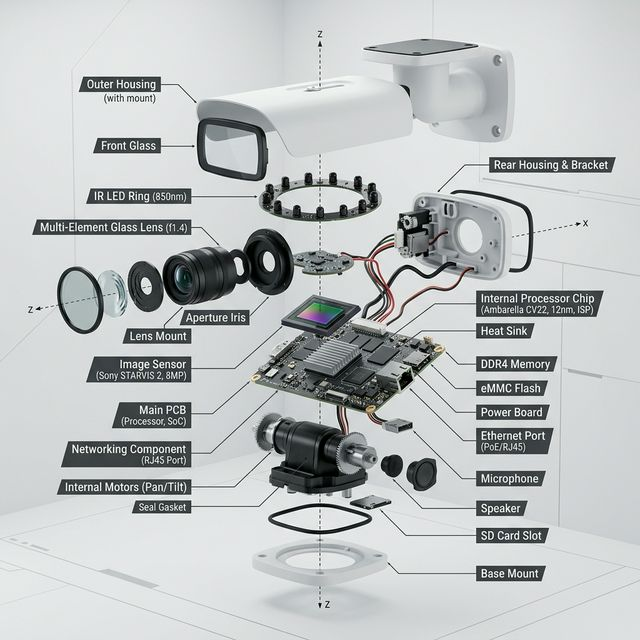
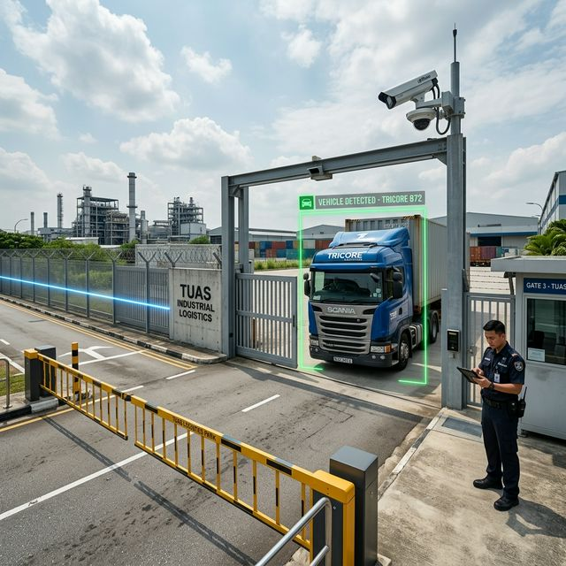
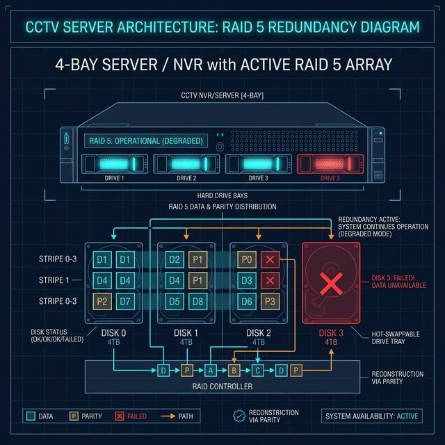

1. What Is a CCTV Camera System?
CCTV (Closed-Circuit Television) is a video surveillance system that captures, records, and stores secure video footage. Operating on a closed circuit, these cameras deliver encrypted streams to specific monitors and recorders, accessible only to authorized personnel.
Deterrence & Evidence Standard
Modern surveillance serves a dual mandate: Deterrence to prevent crime before it occurs, and Evidence to provide irrefutable clarity AFTER an incident.
Visible cameras act as a psychological barrier, causing potential intruders to choose softer targets. Research shows that properties with visible 4K cameras experience significantly lower burglary rates.
When a breach occurs, high-resolution footage captures facial features and license plates that are critical for police investigations and insurance validation in Singapore. Beyond security, these systems are vital for operational oversight, workforce safety, and delivery verification across residential and industrial sectors.
Advanced Surveillance Intelligence
Today’s CCTV platforms are intelligent data systems. They no longer just record pixel data; they understand the environment through AI processing units (NPU).
- ✓ Human/Vehicle Classification: Filter out shadows and animals to eliminate 95% of false alerts.
- ✓ ColorView Technology: Capture full-color video even in near-total darkness (0.0005 Lux).
- ✓ Encrypted Mobile Streams: View live feeds with end-to-end encryption.
2. How CCTV Systems Work
Understanding the ecosystem of hardware and software working in synchronisation helps you build a resilient security foundation.
The Six Core Components
A professional IP-CCTV system is a network of specialized components working together to capture, process, and protect your site data.
IP Cameras (The Digital Eye)
The camera is the most critical link in the chain. Modern IP (Internet Protocol) cameras are essentially specialized digital computers that capture light via a CMOS sensor and convert it into encrypted data packets.
Unlike old analogue cameras, IP cameras handle their own compression (H.265) and AI processing at the "edge," delivering a perfected digital stream to the recorder via your network.
Network Video Recorder (The Central Brain)
The NVR is the workstation that aggregates and organizes all camera feeds. It is responsible for continuous recording, motion detection logic, and serving streams to your mobile app.
Professional NVRs are built for 24/7 high-load operations, featuring robust cooling systems and hardware acceleration to handle dozens of simultaneous 4K video streams without latency.
Surveillance HDD (The Digital Memory)
Standard PC hard drives are NOT suitable for CCTV. We use enterprise-grade "Surveillance Drives" (like WD Purple or SkyHawk) specifically engineered for 24/7 continuous write cycles.
These drives feature vibration sensors and AllFrame technology to prevent frame loss, ensuring that your evidence is perfectly preserved even during high-intensity incidents.
Network Infrastructure (PoE & Switches)
IP systems require network infrastructure to transmit video and power. PoE (Power over Ethernet) delivers both data and electrical power through a single CAT6 cable—simplifying installation and centralizing power backup.
PoE Switches: These provide connectivity and power to multiple cameras (4, 8, 16, or 24 ports). A managed switch allows for remote diagnostics and VLAN segmentation for improved security.
Cable Limitations & Distances
CAT6 (Ethernet): Maximum distance of 100 meters per run. Beyond this, we use PoE extenders or fiber optic conversion.
Coaxial: Used for HD-Analogue systems, supporting up to 500 meters without power (requires separate power cabling).
Fiber Optic: Used for industrial sites or large campus deployments, supporting distances from 2km to 20km+ with zero interference.
Uninterruptible Power Supply (UPS)
Power failures disable CCTV systems unless backup power is provided. A UPS automatically takes over during blackouts, ensuring cameras continue recording just when security is most vulnerable.
A standard 1500VA UPS provides 20-40 minutes of runtime for a medium system—enough to bridge most temporary outages or keep the system running while a generator starts.

Monitor (Optional - Local Viewing)

Dedicated monitors display camera feeds locally. While optional (as you can view on your phone), monitors are essential for security desks, reception areas, or business owner offices for instant oversight.
Viewing Options: You can use standard Full HD/4K computer monitors via HDMI or large-format TV displays for control rooms.
Mobile Apps & Software (Remote Access)
Modern CCTV systems include encrypted mobile apps (iOS/Android) and desktop software for viewing cameras from anywhere in the world.
- Live Viewing: Check all your properties in real-time.
- Instant Playback: Rewind and download clips immediately to your phone.
- Push Notifications: Receive alerts for AI-detected human or vehicle activity.
- Two-Way Audio: Speak through cameras equipped with microphones and speakers.
How It All Works Together
Signal Flow: Camera captures video → CAT6 cable (PoE) → PoE Switch → NVR (Records to HDD) → Router → Smartphone App.
When you open your app, it requests a secure stream from your NVR via the cloud or a direct IP connection. For recorded footage, the NVR retrieves data from its hard drives and streams it to your device instantly.

3. Types of CCTV Camera Systems
CCTV technology has evolved significantly. Understanding the different system types—and their tradeoffs—helps you choose the right solution for your property.
IP Network vs HD Analogue vs Legacy Analogue
Three fundamental CCTV technologies exist today: IP Network (recommended for new installations), HD Analogue (upgrade path for legacy systems), and Legacy Analogue (obsolete, no longer recommended).
IP Network CCTV Systems - The Modern Standard
IP (Internet Protocol) network camera systems use digital cameras that transmit video over ethernet networks. This is the modern standard for CCTV and our recommended technology for all new installations.
How IP Systems Work: IP cameras are essentially specialized computers. Each camera captures video with a digital image sensor (CMOS), processes it using built-in H.265 compression, and sends it over a single CAT6 cable using PoE (Power over Ethernet).
Resolution Capabilities: IP cameras far exceed legacy standards, offering resolutions from 2MP (1080p) up to 12MP (4K) and beyond. While old analogue systems maxed out at 0.3MP, modern IP cameras provide 6× to 40× higher resolution.
Advantages of IP Systems:
- ✓ Superior Image Quality: Perfect digital transmission with zero signal degradation.
- ✓ Extreme Scalability: Add cameras by connecting to your network; no recording limits at the hardware level.
- ✓ Advanced AI: Supports human/vehicle detection and facial recognition.
- ✓ Simple PoE Wiring: Single cable carries both video and power.
HD Analogue CCTV Systems - Upgrade Path for Legacy Systems
HD Analogue technology (Turbo HD, AHD, CVI) provides high-definition video using traditional coaxial cables. It was developed as a cost-effective upgrade path for properties with existing legacy infrastructure.
How it Works: It captures video at high resolutions (1080p to 4K) but transmits it as an analogue signal over coax. This allows you to upgrade from old low-res cameras without the labor cost of re-cabling your entire property.
When to Choose: We recommend HD Analogue primarily when you have a large site with existing coax cabling in good condition and a limited budget for a full IP migration.
Legacy Analogue - Obsolete Technology
Traditional analogue systems are now obsolete. They are limited to 0.3MP resolution (grainy and blurry) and lack modern features like mobile apps or AI. We do not install new legacy systems and strongly advise upgrading immediately if you still rely on them for security.
CCTV Technology Comparison
| Feature | IP Network | HD Analogue | Legacy Analogue |
|---|---|---|---|
| Resolution | 2MP - 12MP+ | 2MP - 8MP | 0.3MP - 0.5MP |
| Image Quality | Excellent | Good | Poor |
| Wiring | CAT6 (Single Cable) | Coax + Power | Coax + Power |
| AI Analytics | Yes (Advanced) | Limited | None |
| New Installation | ✅ Recommended | ❌ Not Recommended | ❌ Obsolete |
Wired vs Wireless CCTV Cameras
Wired Systems (Recommended): Each camera connects via physical cable to a central recorder. This provides the maximum reliability, stable performance, and continuous power without battery maintenance. For professional and commercial applications, wired is the only acceptable standard.
Digital video and power are delivered through a single CAT6 cable (PoE), ensuring zero interference and 24/7 recording regardless of WiFi congestion or battery health.

Wireless (Limited Use): Wireless cameras transmit video over WiFi but usually still require a power cable. We only recommend wireless for specific niche cases where running a data cable is genuinely impossible (e.g., across a public road or temporary construction monitoring).
The "Power" Trap: Most consumers don't realize that "wireless" cameras still need to be plugged into an electrical outlet or rely on batteries that require regular recharging. "Wireless" refers only to the data transmission, not the electrical connection.

4. Upgrading Existing CCTV Systems
If your property relies on legacy analogue hardware, you have two primary upgrade paths to achieve modern 4K clarity.
Path A: Full IP Network Migration (The Gold Standard)
This involves replacing old coaxial cables with modern CAT6 infrastructure. While it requires more labor upfront, it provides a 10-year technology runway and supports the highest resolution AI cameras available.
Performance Gain: Transition from blurry 0.3MP video to crystal-clear 8MP (4K) with facial recognition and 30-day retention.
Path B: Hybrid Turbo HD Upgrade (Cost-Effective)
By utilizing existing coaxial cabling, we can install HD-TVI cameras that deliver up to 5MP resolution without the need for new wiring. This is the fastest way to achieve high-definition security on a restricted budget.
Best For: Estate management or large commercial sites where re-wiring would be logistically impossible or cost-prohibitive.
5. CCTV Camera Types Explained
Choosing the right form factor for each zone is as important as the resolution itself. A camera perfectly suited for a lobby might be useless for a perimeter fence.
Common Form Factors
1. Dome Cameras (Discreet & Professional)
The standard for indoor applications like offices, lift lobbies, and retail stores. Their low-profile design makes them less intrusive while the tinted covers hide the lens direction from onlookers.
Durability Standard: Professional domes are **IK10 Vandal-Rated**, meaning they can withstand direct physical impact.

2. Bullet Cameras (Maximum Deterrence)
Designed for power and visibility. Their prominent shape signals active surveillance to intruders, acting as a strong psychological deterrent for perimeter fences and car park entries.
Night Performance: Bullets typically house larger infrared LEDs, providing superior night vision distances of 50m to 80m+.
3. PTZ Cameras (Target Tracking)
PTZ (Pan-Tilt-Zoom) cameras provide mechanical movement, allowing security operators to rotate the camera and zoom in on specific targets from kilometers away with zero pixel loss.
Smart Tracking: High-end IP PTZs feature Auto-Tracking AI that automatically follows intruders across the property line without manual intervention.
4. Fisheye Cameras (360° Total Coverage)
Fisheye cameras use a multi-megapixel sensor and a specialized lens to capture a complete 360° view of a room. This allows a single camera to replace 4 standard fixed cameras, significantly reducing cabling and hardware costs.
Digital Dewarping: While the raw image is a "bubble," the software "dewarps" it into multiple flat rectangular views, allowing you to look in every direction simultaneously from a single video stream.
Understanding Lens Focal Lengths (2.8mm vs 6mm)
Focal length determines the field of view and depth of detail. A smaller number (2.8mm) gives a wide view, while a larger number (6mm or 12mm) zooms in on a specific area with much higher detail.
Choosing the right lens is just as important as the resolution. A 2.8mm lens is perfect for small rooms, while a 6mm lens is necessary for zooming in on a driveway or entry gate from a distance.
Varifocal Zoom
Features an adjustable lens (usually 2.8-12mm) that can be zoomed in or out during installation to perfectly frame the target area.

License Plate Recognition (LPR)
Specialized shutter speeds and algorithms designed to capture crisp, readable license plates even on fast-moving vehicles at night.

Thermal Imaging
Detects heat signatures instead of visible light. Essential for complete darkness, fog, or heavy rain over long distances.

Critical Performance Features
Vandal Resistant
Reinforced metal housing and polycarbonate dome capable of withstanding direct physical impact.
Weatherproof
Fully sealed against dust and immersion in water—essential for Singapore's tropical storms.
Two-Way Audio
Built-in mic and speaker allow you to listen in and speak back through the smartphone app.
Edge Backup
SD card slot for local backup recording in case the central NVR connection is lost temporarily.
6. Understanding Resolution & Image Quality
Resolution determines how much detail your cameras capture. Higher resolution means clearer faces, readable license plates, and better evidence. But resolution isn't everything—other factors significantly affect image quality.
The Resolution Ladder
Camera resolution is measured in megapixels (MP). More pixels = more detail. Here is the standard progression for professional systems:
- 2MP (1080p Full HD): Entry-level. Suitable for basic monitoring of small rooms or residential interiors. Identification range: ~5 meters.
- 4MP (2K QHD): The current commercial standard. Recommended for most offices, retail stores, and building perimeters. Identification range: ~10 meters.
- 8MP (4K Ultra HD): Maximum detail. Essential for critical areas like cash counters, main entrances, and license plate capture. Identification range: ~20 meters.
Note: A professional 4MP camera with a high-quality lens will often outperform a "cheap" 8MP consumer camera, especially at night. Sensor quality and lens glass are just as important as the megapixel count.
Beyond Megapixels: H.265 Compression
Modern systems use H.265 compression. This technology allows high-resolution 4K video to be stored using 50% less space than older systems (H.264), without any loss in image quality. Ensure your NVR supports H.265 to maximize your storage investment.
7. Planning Your CCTV System
Effective CCTV starts with proper planning. A 100-camera system is useless if it misses the entry point or has blind spots in critical corners.
Strategic Camera Placement

The 90° Rule: Standard fixed lens cameras cover approximately 90°. For a typical room, mounting the camera in a corner allows it to cover the entire space with zero blind spots.
The "Choke Point" Strategy: Instead of trying to see everything, focus high-resolution cameras on "Choke Points"—locations where an intruder must pass. This includes main doorways, stairwells, and narrow corridors.
Height Matters: Cameras mounted too high (above 4 meters) result in "Top-of-Head" views, making facial identification impossible. For entry points, we recommend mounting cameras at roughly 2.5 meters to capture clear eye-level facial details.
8. Video Storage & Retention
How much storage do you need? Recording 4K video 24/7 generates massive data loads that standard computer drives cannot handle.
How Much Storage Do You Need?
Storage needs depend on several dynamic factors. Understanding these variables helps you specify appropriate capacity and avoid running out of crucial retention days.
- Resolution Impact: 2MP typically uses ~400GB/mo, 4MP ~650GB/mo, while 8MP (4K) requires up to 1.5TB per camera per month.
- Frame Rate: 25fps is the standard for fluid motion. Increasing to 30fps adds ~20% more storage with negligible visual gain.
- Compression: Always use H.265. It reduces storage by 30-50% compared to older H.264 without loss of detail.
Surveillance-Grade vs. Desktop Drives
Standard hard drives are designed for intermittent use (8 hours/day). Surveillance drives are engineered for continuous 24/7 write operations across multiple camera streams.
| Feature | Standard Desktop Drive | Surveillance-Grade Drive |
|---|---|---|
| Duty Cycle | 8x5 (Office use) | 24/7 / 365 |
| Streaming Support | Limited | Up to 64 HD Cam Streams |
| Vibration Sensors | None | Built-in RV Sensors |
| Optimal Usage | 8 Hours/Day | 24 Hours/Day Continuous |
RAID Configurations for Redundancy
For critical commercial sites, RAID (Redundant Array of Independent Disks) protects against data loss if a hard drive fails.
RAID 1 (Mirroring)
Data is written to two drives simultaneously. If one fails, the other holds the full evidence record. 50% efficiency.

RAID 5 (Parity)
Data and parity are distributed across 3+ drives. One drive can fail completely without any loss of footage. High efficiency.

9. What Does a CCTV System Cost?
Understanding the investment required helps you budget appropriately. While every property is unique, here are the industry benchmarks for professional Singapore installations.
Investment by Property Type
| Property Type | Typical Count | Investment Range |
|---|---|---|
| HDB 4-Room / 5-Room | 3-4 Cameras | $1,200 – $1,800 |
| Landed Terrace House | 6-8 Cameras | $3,500 – $6,000 |
| Small Office / Retail | 4-8 Cameras | $2,000 – $4,500 |
| Warehouse / Factory | 16-32 Cameras | $12,000 – $25,000+ |
*Prices include professional grade IP cameras, NVR, hard drives, cabling, and full professional installation with warranty.
What Drives the Cost?
Camera Quantity: The number of cameras is the primary driver of hardware and labor costs. More cameras require larger NVRs and more complex cabling.
Resolution & Storage: Opting for 4K over 1080p increases the cost of the camera hardware and significantly increases the cost of the high-capacity hard drives required to store that data.
Installation Complexity: Cabling through high ceilings, concrete beams, or across multiple floors requires more manpower and specialized equipment compared to simple surface-mount installations.
10. Understanding Nightvision & Low Light
Most security incidents happen in the dark. If your cameras produce a "grainy" or "noisy" image at night, they are virtually useless for identification.
Infrared (IR) vs. Full Color Night Vision
Standard IR Night Vision: Most cameras use invisible Infrared LEDs to light up a scene. This produces a stark black-and-white image. While effective, you lose critical details like the color of a suspect's shirt or the color of a getaway vehicle.
Starlight / ColorVu Technology: Modern premium cameras use high-sensitivity sensors and large aperture lenses to maintain vivid full-color video even in near-total darkness. Seeing a "Blue Shirt" instead of just a "Grey Shirt" can be the difference between a successful investigation and a cold case.
11. Mobile Apps & Remote Access
Modern CCTV is no longer just for viewing in a security room. You should be able to access your cameras from anywhere in the world on your smartphone.
Stay Connected Anywhere
Live View & Playback: Professional apps (like Hik-Connect or Wisenet Mobile) allow you to view live streams, scrub through historical footage, and download video clips directly to your phone's gallery with a few taps.
AI Push Notifications: Instead of monitoring your cameras 24/7, your system can "call" you. Receive a push notification the instant a human or vehicle enters your property during restricted hours.
Two-Way Audio: Some models feature built-in microphones and speakers, allowing you to speak directly through the camera to a delivery person or warn off an intruder remotely.
12. Video Analytics: Edge, NVR, or Server-Based?
Modern CCTV systems can analyze video to detect events, count people, recognize faces, and trigger alerts automatically. Understanding where analytics processing happens—Edge, NVR, or Server—helps you choose the right solution for your performance and budget needs.
Architecture 1: Edge Analytics (At the Camera)
Distributed Intelligence: Edge analytics means the camera itself contains a dedicated AI processor that analyzes the video stream in real-time. This is our recommended approach for most modern commercial installations.
How it Works: Each IP camera has an "AI processor" that identifies humans, vehicles, and specific events before the video even reaches the recorder. When an event is detected, the camera sends "Metadata" (tags) along with the video, allowing for instant alerts and lightning-fast searches on the NVR.
Main Advantages: Reduced network load (video only records on events), no central processing bottleneck, and faster real-time response times.
Architecture 2: NVR-Based Analytics
Centralized Processing: In this setup, "dumb" cameras send raw video to a powerful NVR, which then performs the analysis. This is often more cost-effective if you already have standard cameras installed and want to add "intelligence" without replacing them.
Trade-offs: While it allows for cheaper cameras, the NVR itself must be significantly more powerful (and expensive). Most NVRs also have a limit on how many channels of analytics they can handle simultaneously (e.g., a 16-channel NVR might only support 4 channels of Face Recognition).
Architecture 3: Server-Based / 3rd Party Analytics
Enterprise Scale: Targeted at large-scale deployments (50+ cameras), this architecture uses dedicated high-end servers running specialized software (like Milestone, Genetec, or Wisenet WAVE).
Why Choose Server-Based: It offers the highest accuracy and the most advanced features, such as deep-learning facial recognition across thousands of faces, behavioral analytics (detecting fights or falls), and complex industrial safety monitoring (PPE detection).
Comparison Table: Choosing Your Architecture
| Factor | Edge Analytics | NVR Analytics | Server-Based |
|---|---|---|---|
| Processing | At each camera | Central NVR | Dedicated Server |
| Camera Cost | Higher ($$$) | Lower ($) | Lower ($) |
| Scalability | Excellent | Limited by NVR | Excellent (Add Servers) |
| Bandwidth | Low (Efficient) | High | High |
| Best For | 10-50 Cameras | 4-16 Cameras | 50+ Camera Enterprise |
13. How Video Analytics Solves Real Problems
Video analytics transforms passive cameras into intelligent systems that detect events, analyze patterns, and trigger actions automatically. Here is how different industries use analytics to solve specific challenges.
13.1 Perimeter Protection & Intrusion Detection

The Challenge: Traditional motion detection triggers constant false alarms from animals, shadows, and rain, leading to "alert fatigue" where real intrusions are ignored.
The AI Solution: Human and Vehicle Classification. The system only alerts when a person or vehicle crosses a "Virtual Fence" line, ignoring everything else. You can even set rules such as "Alert only if a vehicle enters, but not when it exits."
Real-World Impact: A warehouse with 12 cameras reduced false alarms from 60 per night to zero, allowing security to investigate every real alert with 100% confidence.
13.2 Retail Intelligence & Customer Behavior

The Challenge: Retailers often guess which displays attract the most attention or why sales drop during busy hours.
The AI Solution: People Counting at entrances, Heat Mapping to see which aisles are "hot zones," and Queue Management to alert managers when more than 5 people are waiting at the cash counter.
Real-World Impact: A retail chain discovered their conversion rate dropped by 30% during peak hours due to understaffing. By adjusting rotas to match traffic, they increased sales by 8% without increasing total labor hours.
13.3 License Plate Recognition (LPR/ANPR)
The Challenge: Manually checking car stickers at condo or industrial gates is slow and prone to errors.
The AI Solution: Automatic Plate Recognition. Authorized vehicles are recognized in 2 seconds, and the gate opens automatically. Security is instantly alerted if a "Blacklisted" vehicle enters the premises.
Real-World Impact: A local condominium reduced peak-hour entry times from 45 seconds to just 5 seconds per vehicle, eliminating traffic queues on the main road.
13.4 Workplace Safety & PPE Detection
The Challenge: Ensuring workers wear hard hats and high-vis vests in hazardous zones is difficult to enforce manually 24/7.
The AI Solution: PPE Detection. The system scans workers at points of entry and triggers an audio warning or denies gate access if a hard hat or vest is missing.
Real-World Impact: A manufacturing site reduced safety violations by 78% within three months of deployment, providing automated compliance logs for audit purposes.
13.5 Crowd Density & Flow Analysis
The Challenge: Managing large crowds at public events or transport hubs where overcrowding can lead to dangerous crushes.
The AI Solution: Density Monitoring. The system counts people per square meter in real-time. If density hits a threshold (e.g., 4 people/m²), an automated alarm alerts operations to redirect pedestrian flow.
Real-World Impact: A major transport hub used crowd analytics to proactively disperse a platform gathering during a train delay, preventing a potentially dangerous overcrowding incident.
13.6 Touchless Access & Face Recognition

The Challenge: Managing access cards for 500+ employees is expensive, and "buddy punching" (clocking in for friends) costs businesses thousands in time-theft.
The AI Solution: Facial recognition access. Employees simply walk toward the door/turnstile, and it opens in 0.3 seconds. Accuracy is high enough to replace cards entirely while providing un-fakeable attendance logs.
Real-World Impact: An office building eliminated $5,000/year in card replacement costs and stopped an estimated 3% in labor cost leaks caused by buddy-punching.
13.7 Elderly Safety & Fall Detection

The Challenge: Nursing homes and elderly care facilities need 24/7 monitoring, but manual oversight is prone to missing accidents like falls during the night.
The AI Solution: Fall Detection algorithms analyze skeletal patterns and sudden vertical shifts. When a fall occurs, an instant alarm is sent to on-duty staff with a live video popup of the exact location.
Real-World Impact: A local healthcare facility reduced emergency response times from an average of 12 minutes to just 90 seconds, significantly improving patient outcomes for fall-related injuries.
13.8 Vehicle Tracking & Advanced Analytics
The Challenge: Identifying specific vehicles when license plates aren't visible, or monitoring parking violations in drop-off zones where drivers "just stop for a minute."
The AI Solution: Vehicle Make/Model Recognition (identifying "White Toyota Camry") and Dwell Time Analysis. The system automatically detects when a vehicle stays in a 5-minute drop-off zone for too long and sends an automated alert to management.
Real-World Impact: A local hospital improved drop-off zone availability by 85% by automating dwell-time monitoring and sending instantaneous SMS alerts to registered vehicle owners.
Analytics Use Cases Summary
| Industry | Primary Analytics | Key Benefits |
|---|---|---|
| Retail | People Counting, Heat Maps | Optimize layout, better staffing. |
| Industrial | PPE Detection, Restricted Zones | Improve safety, compliance monitoring. |
| Condominiums | LPR, Facial Recognition | Seamless access, resident security. |
| Public Spaces | Crowd Density, Flow Analysis | Prevent crushing, manage events. |
The Power of Integration
Video analytics becomes even more powerful when integrated with other building systems:
- CCTV + Alarm: Video verification allows you to confirm a break-in visually before dispatching police, eliminating false alarm fees.
- CCTV + Access Control: Capture a high-res photo of every person who swipes a card, preventing unauthorized tailgating.
- CCTV + BMS: Automatically turn on lights or HVAC when the camera detects occupancy in a conference room, saving energy.
14. Real Installation Examples
Real-world case studies demonstrate how CCTV systems are designed, deployed, and deliver value across different property types. These examples show the decision-making process, challenges faced, and results achieved.
Case Study 1: Residential Terrace House
Complete Perimeter Protection
Property Details: 2-storey terrace house in Toa Payoh. Lot size 20m × 8m. No previous security. Neighbor's house was recently broken into via the rear yard.
Standard System Design: 6 cameras covering the front gate, porch, car porch, side alley, back yard, and rear lane.
- Front Gate (4MP Bullet): Focused on facial identification of visitors and street approach.
- Back Yard (4MP Bullet): Featuring AI human detection to filter out urban neighborhood cats while alerting for actual intrusions.
- Car Porch (4MP Dome): Discrete ceiling mount under the porch for close-up entrance monitoring.
Result: Within 12 months, the system successfully deterred a car break-in attempt when motion-triggered IR LEDs activated. Total investment: $3,780.
Case Study 2: Retail Shop (2-Storey Shophouse)

Loss Prevention & POS Security
The Challenge: Electronics store in Geylang facing inventory discrepancies and customer disputes. Existing 10-year-old analogue system was too grainy to verify currency denominations.
The Solution: 12-camera IP system with 8MP (4K) domes over cash registers for transaction verification.
- POS Integration: Video synced with transaction records to search by transaction ID.
- Inventory Security: Vandal-resistant domes in storage areas to prevent tampering.
- Operational Insights: People counting analytics used to optimize staffing during peak hours (3-6 PM).
Result: Payback period of ~8 months. Internal theft identified and $2,400 recovered. Total investment: $9,170.
Case Study 3: Industrial Warehouse

Perimeter Security & Safety Monitoring
The Challenge: 25,000 sqft logistics facility in Tuas with forklift safety concerns and a large, vulnerable perimeter.
The Solution: 32-camera enterprise system with AI human detection on the fence line every 40m.
- Gate LPR: Automatic license plate recognition logs every delivery vehicle.
- Safety Audits: AI monitoring of loading bays and forklift aisles to investigate collisions and improve worker safety.
- RAID Storage: 60-day retention with RAID 5 redundancy for mission-critical video data.
Result: 8% reduction in insurance premiums and zero successful break-ins since installation. Total investment: $32,700.
15. Maintenance & Best Practices
Proper maintenance ensures your CCTV system remains operational and effective. High-resolution cameras are precision instruments that require regular care to function 24/7/365.
Maintenance Schedule
Monthly (DIY)
- Verify Recording: Check playback to ensure no gaps or drive errors.
- Angle Audit: Ensure cameras haven't shifted due to wind or birds.
- App Access: Test push notifications and remote playback speeds.
Quarterly
- Physical Cleaning: Wipe lenses with microfiber cloths to remove haze and dust.
- Connection Check: Inspect outdoor junction boxes for signs of water ingress.
- Night Test: Verify IR LEDs are activating and night vision is balanced.
Annual (Professional)
- HDD Analysis: Full S.M.A.R.T. health checks and preventive replacement.
- Firmware Audit: Critical security patches for NVR and IP cameras.
- Deep Clean: Internal NVR fan cleaning to prevent thermal failure.
Export & Share Evidence
When incidents occur, the integrity of your video file is paramount for police investigations. Always export in the Native Format to preserve watermarks and digital signatures that prove the footage hasn't been tampered with.
Methods: Use a high-speed USB 3.0 drive for large exports, or use the secure cloud-share link if your VMS supports encrypted web-sharing for insurance adjusters.
16. Privacy, PDPA & Cybersecurity
In Singapore, surveillance remains governed by strict laws. Compliance is not just a best practice—it's a legal requirement to avoid heavy fines and civil liabilities.
PDPA Compliance Checklist

If you're a business or MCST, you must comply with the Personal Data Protection Act (PDPA):
- Notification: Clear signage must be posted at all entrances before individuals enter the monitored zone.
- Purpose Limitation: Cameras must be for security or operational safety—not for invasion of privacy.
- Retention: Footage should generally be deleted after 30-90 days unless part of an ongoing investigation.
Cybersecurity Best Practices
Modern IP systems are vulnerable if not secured at the network level. We implement the following by default:
- Strong Passwords: 12+ characters with symbols. Never use manufacturer defaults.
- Network Segmentation: Cameras are placed on a dedicated VLAN separate from the main business network.
- VPN Only: Avoid direct port-forwarding. Use a secure VPN tunnel for remote viewing.
17. Common Mistakes to Avoid
Learning from others' mistakes saves time, money, and frustration. These are the most common CCTV installation and planning errors we see—and how to avoid them.
Mistake #1: Buying the Cheapest Cameras
The Mistake: Choosing cameras solely based on lowest price without considering quality, features, or longevity.
Why it's a problem:
- Cheap cameras often fail within 1-2 years
- Poor image quality (defeats purpose of CCTV)
- No manufacturer support
- Replacement costs exceed initial savings
Real Example: A customer saved $400 by buying cheap online kits. Within 18 months, three cameras failed and night vision was unusable. After replacement costs, they spent $3,350—nearly double the cost of a professional system.
Mistake #2: Poor Camera Placement
A) Cameras Too High: Mounted 5+ meters high, you see only the tops of heads. Ideal height is 2.5-3.5 meters with a 15-25° angle.
B) Facing Windows/Sunlight: Direct backlight turns visitors into dark silhouettes. Always mount cameras outside looking in, or at angles avoiding window glare.
C) Corner Blind Spots: Placing one camera in a corner creates a blind spot directly below it. Use two cameras per corner for 180° wall-to-wall coverage.
Mistake #4: Not Enough Hard Drive Capacity
The Problem: Discovering short retention after an incident. If you expect 30 days but get only 12, your evidence may have already been overwritten.
The Fix: Always oversize slightly (10-20% buffer). Verify retention after one week of recording to ensure your target capacity is met.
- 4 cameras × 4MP × 30 days ≈ 2-3TB
- 8 cameras × 4MP × 30 days ≈ 4-6TB
- 16 cameras × 4MP × 30 days ≈ 8-12TB
18. Brands & Equipment We Carry
We partner with industry-leading manufacturers to provide reliable, high-quality CCTV systems. Each brand is selected for its proven performance in Singapore's environment.
Our Primary Brand: Hikvision
Hikvision is the world's largest manufacturer of CCTV equipment, with over 40% global market share. We choose them for five core reasons:
- Proven Reliability: Millions of successful installations across Singapore government and commercial sites.
- AI Innovation: Leaders in edge-based AI (human/vehicle detection) and low-light sensors.
- Local Support: Singapore-based distributors ensure fast warranty and technical service.
- Scalability: Complete ecosystem from simple home setups to enterprise-grade hub systems.
Pro Series
Ideal for 90% of residential and SMB projects. Excellent balance of 4K quality, AI detection, and affordability.
- 4MP to 8MP (4K) resolution
- IP67 Weatherproof
- AcuSense Person/Vehicle tracking
Ultra Series
18. Engineering-Approved Brands
We exclusively deploy equipment from global tier-1 manufacturers to ensure 10-year reliability and seamless firmware support.
HIKVISION
Global leader in AI surveillance. Ideal for mass-market residential and commercial sites with superior ColorVu night performance.
DAHUA
Pioneers in WizSense AI technology. Known for extremely reliable NVR architectures and high-density industrial storage.
AXIS
The Swedish gold standard for cybersecurity and enterprise VMS. Mandatory for government and ultra-high-security facilities.
19. Surveillance FAQ
How many cameras are recommended for a landed terrace house? +
A 3-storey terrace house typically requires **6 to 8 cameras** for 100% perimeter coverage. This usually includes 2 for the front porch, 1 for the side alley, 2 for the rear yard, and 1-2 for critical interior areas like the living hall or kitchen entrance.
Will my cameras work during a power failure? +
Standard systems will shut down immediately. We strongly recommend a **CCTV-Dedicated UPS**. This provides 30-60 minutes of runtime, ensuring your system continues recording precisely when your property is most vulnerable to intrusion during a blackout.
What is the difference between H.264 and H.265 compression? +
H.265 (HEVC) is the modern standard. It is **50% more efficient** than H.264, meaning you can store twice as much 4K footage on the same hard drive without any loss in image quality. All Securevision NVRs utilize H.265+ by default.